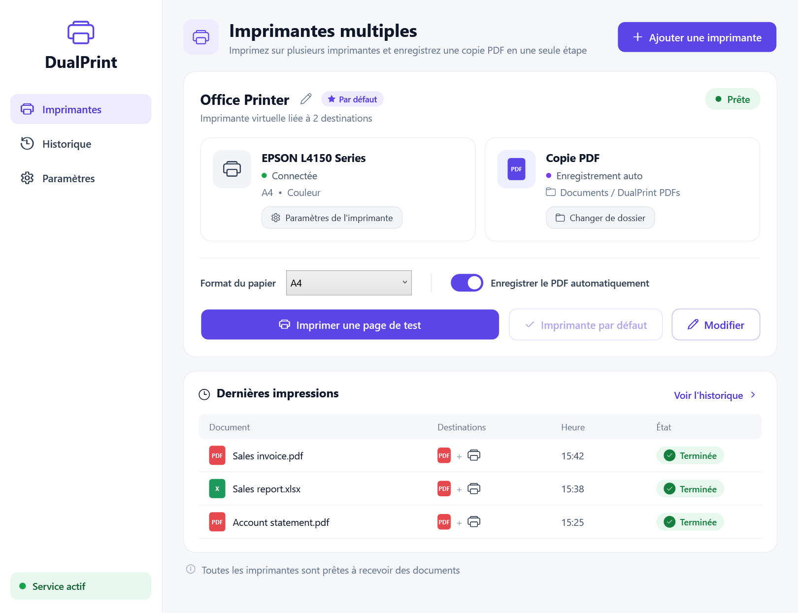

Comment imprimer sur deux imprimantes en même temps sous Windows
Windows envoie chaque impression à une seule imprimante. Voici comment imprimer le même document sur deux imprimantes ou plus à la fois, avec une copie PDF automatique, en une minute environ.
Pourquoi Windows ne le fait pas par défaut
Quand vous cliquez sur Imprimer, Windows confie le travail à une seule imprimante. Aucun réglage intégré ne permet de le dupliquer.
Le « pool d’imprimantes » est souvent conseillé, mais il envoie chaque travail à la première imprimante libre, pas à toutes.
Imprimer deux fois fonctionne, mais c’est lent et facile à oublier, surtout pour les factures qui exigent un papier et un PDF archivé.
Imprimer sur plusieurs imprimantes avec DualPrint
Téléchargez DualPrint
Téléchargez l’application gratuite pour Windows 10 ou 11, décompressez-la et lancez DualPrint.exe. Acceptez une fois la demande administrateur.
Ajoutez une imprimante multiple
Cliquez sur Ajouter une imprimante et donnez-lui un nom, par exemple « Factures ».
Choisissez les imprimantes
Cochez deux imprimantes ou plus. Ajoutez « Microsoft Print to PDF » pour obtenir aussi une copie PDF.
Choisissez le dossier PDF
Si le PDF est sélectionné, indiquez le dossier et un préfixe de nom facultatif. Les fichiers y sont enregistrés automatiquement.
Imprimez depuis n’importe quel logiciel
Dans Word, Excel, le navigateur ou votre logiciel de compta, choisissez la nouvelle imprimante.
Consultez l’historique
Chaque document apparaît dans l’historique avec chaque destination et son résultat.

Imprimer et enregistrer en PDF en même temps
Sélectionnez une imprimante réelle et « Microsoft Print to PDF ». Vous obtenez le papier et un PDF nommé comme Facture_2026-11-02_15-45-00.pdf dans le dossier choisi, sans fenêtre « Enregistrer sous ».
Questions fréquentes
Windows peut-il imprimer sur deux imprimantes sans logiciel supplémentaire ?
Non. Windows envoie un travail à une imprimante ; le pool d’imprimantes répartit seulement les travaux sans imprimer sur toutes.
Est-ce compatible avec les imprimantes réseau et USB ?
Oui. Toute imprimante installée dans Windows convient, y compris réseau, USB et imprimantes de tickets.
Puis-je choisir le format du papier ?
Chaque imprimante multiple a un réglage de format (A4, A3, A5, Letter, Legal ou automatique). Les autres réglages sont ceux de chaque imprimante.
Est-ce gratuit ?
Oui. DualPrint est gratuit et open source (licence MIT).